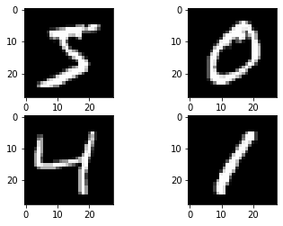

What is neural Network
Artificial intelligence is a wide concept used to describe the process of mimicking human intelligence by machine. A lot of research is going on and tons of papers are being published, however, this task is very complex and still, a lot of work is required to be done.
Deep Learning is a subcategory of AI where we use a neural net on the large dataset to give the machine some intelligence. a neural network works the same way a human neuron works. It is a function plus non-linearity. It takes data as input and produce some output and pass this output to a nonlinearity function. Currently, it is widely used in NLP and Image processing (Convolutional neural Network.)
Let’s understand how a neural network works. Consider an example that you have been given data and you have to predict whether the given instance is a bird or not. Data have the following column (we call it features).
| id | leg | tail | feather | horn | bird |
|---|---|---|---|---|---|
| 1 | 1 | 1 | 1 | 0 | 1 |
| 2 | 1 | 0 | 0 | 1 | 0 |
| 3 | 1 | 0 | 0 | 1 | 0 |
| 4 | 1 | 1 | 1 | 0 | 1 |
| 5 | 1 | 1 | 0 | 1 | 0 |
From the data, we can see that the horn and feature are very important features to decide whether the given row is a bird or not. In other words, we can say that the feature importance of feather and horn is very high( Feather and horn are co-related but for now we will not into that). We can also say that some features are not that important. So an important feature will have heavyweight and less important features will have lesser weight. The below picture shows how wight is assigned to feature (ranging from 0-1).

Now we have an activation function that adds non-linearity to the model. It decides which feature will pass and which will stop during training. There are multiple activation functions like sigmoid(used in binary classification), softmax, relu, leaky-relu, tanh, etc..

This setup is called neurons and in one model there can be multiple layers of neurons. The first layer is called the input layer and the last layer is called an output layer. While training we pass data through these layers and weight parameters learned by our network.
Now the question is how this weight is learned?
While training, weight is initialized randomly (or using some initialization also like HE). While training we pass the data from the input neuron and some output is generated as the output layer. This is called a forward pass. This output is compared with the actual value and loss is calculated. Now we propagate this loss backward and calculate partial derivative (gradient ) wrt all the wight parameters so that we can minimize this loss. This is called a backward pass. We have multiple gradient-based optimizers that are used to minimize the loss by adjusting the weight values.
Enough talk lets code. We will use Keras to create a simple ANN on most data.
First import all the required packages
from keras.datasets import mnist
import matplotlib.pyplot as plt
from keras.models import Sequential
from keras.layers import Dense
from keras.layers import Dropout
from keras.utils import np_utils
import numpy as np
Load the mnist data
(X_train, y_train), (X_test, y_test) = mnist.load_data()
X_train[0].shape
(28, 28)
Here we can see that images are of 28X28=784 pixels. let’s plot some images.
plt.subplot(221)
plt.imshow(X_train[0], cmap=plt.get_cmap('gray'))
plt.subplot(222)
plt.imshow(X_train[1], cmap=plt.get_cmap('gray'))
plt.subplot(223)
plt.imshow(X_train[2], cmap=plt.get_cmap('gray'))
plt.subplot(224)
plt.imshow(X_train[3], cmap=plt.get_cmap('gray'))
plt.show()

num_pixels = X_train.shape[1] * X_train.shape[2]
X_train = X_train.reshape(X_train.shape[0], num_pixels).astype('float32')
X_test = X_test.reshape(X_test.shape[0], num_pixels).astype('float32')
X_train.shape
(60000, 784)
There are 60000 samples in the train set. Now we will normalize the image. It is good practice to normalize the data between 0-1. Also, there is a total of 10 classes, so we will create a one-hot encoding of the label using to_categorical.
X_train = X_train / 255
X_test = X_test / 255
y_train = np_utils.to_categorical(y_train)
y_test = np_utils.to_categorical(y_test)
num_classes = y_test.shape[1]
y_train.shape
(60000, 10)
Now create a model. In Keras model can be created in different ways. Here I am using the Sequential model to create the NN. On the image we should use CNN however for demo purposes, I am not using CNN. Instead, I am directly using a dense layer. Here I am using only two layers. In the Sequential model, the output of one layer is automatically passed to the input of the next layer. In our model, the output is multiclass, we are using softmax activation in the last layer. Softmax gives the probability among all the classes. In other words, it squeezes the output in the probability range of 0-1.
def get_model():
model = Sequential()
model.add(Dense(num_pixels, input_dim=num_pixels, kernel_initializer='normal', activation='relu'))
model.add(Dense(num_classes, kernel_initializer='normal', activation='softmax'))
#Compile model
model.compile(loss='categorical_crossentropy', optimizer='adam', metrics=['accuracy'])
return model
model = get_model()
model.fit(X_train, y_train, validation_data=(X_test, y_test), epochs=10, batch_size=200, verbose=2)
scores = model.evaluate(X_test, y_test, verbose=0)
Epoch 1/10
300/300 - 3s - loss: 0.2720 - accuracy: 0.9233 - val_loss: 0.1387 - val_accuracy: 0.9570
Epoch 2/10
300/300 - 3s - loss: 0.1086 - accuracy: 0.9686 - val_loss: 0.0973 - val_accuracy: 0.9715
Epoch 3/10
300/300 - 3s - loss: 0.0704 - accuracy: 0.9795 - val_loss: 0.0800 - val_accuracy: 0.9749
Epoch 4/10
300/300 - 2s - loss: 0.0495 - accuracy: 0.9855 - val_loss: 0.0729 - val_accuracy: 0.9765
Epoch 5/10
300/300 - 3s - loss: 0.0365 - accuracy: 0.9895 - val_loss: 0.0774 - val_accuracy: 0.9760
Epoch 6/10
300/300 - 2s - loss: 0.0264 - accuracy: 0.9926 - val_loss: 0.0623 - val_accuracy: 0.9802
Epoch 7/10
300/300 - 3s - loss: 0.0190 - accuracy: 0.9952 - val_loss: 0.0623 - val_accuracy: 0.9798
Epoch 8/10
300/300 - 2s - loss: 0.0143 - accuracy: 0.9965 - val_loss: 0.0617 - val_accuracy: 0.9800
Epoch 9/10
300/300 - 3s - loss: 0.0106 - accuracy: 0.9978 - val_loss: 0.0636 - val_accuracy: 0.9811
Epoch 10/10
300/300 - 2s - loss: 0.0077 - accuracy: 0.9987 - val_loss: 0.0597 - val_accuracy: 0.9816
loss,acc = model.evaluate(X_test, y_test, verbose=0)
print(loss,acc)
0.05973554775118828 0.9815999865531921
As we can see, our simple model can give an accuracy of ~98%. Nowadays, there are complex CNN models, using which you can achieve accuracy of ~99.8%.